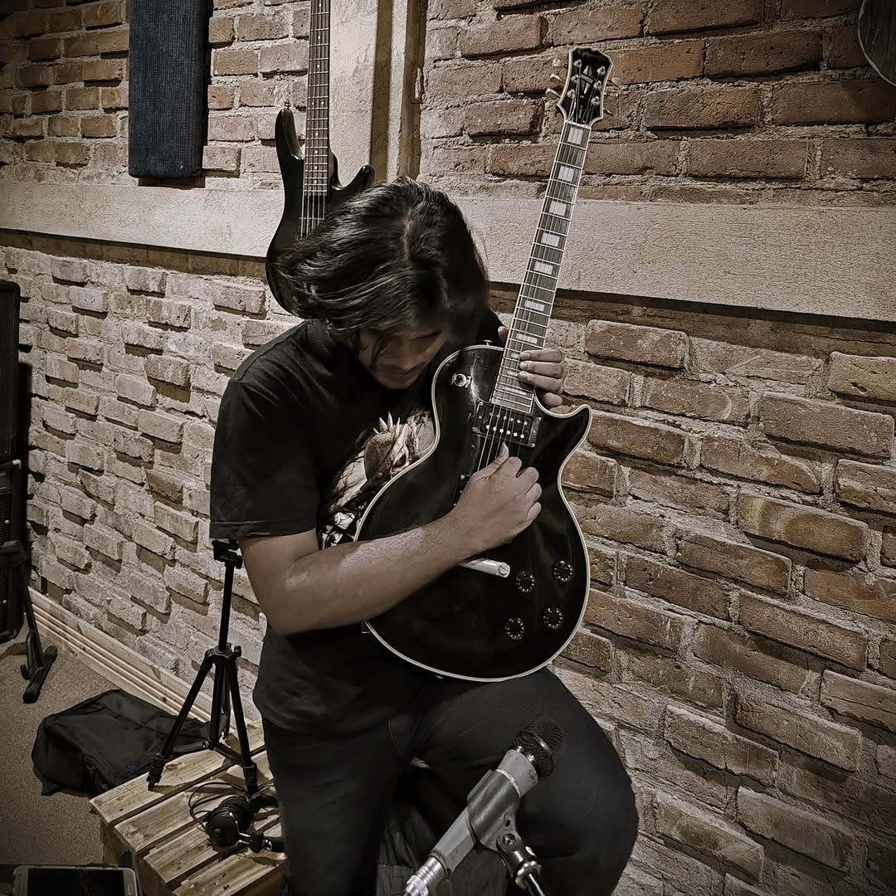

About Us
Welcome to ScreemLinex, your ultimate destination for daily insights into the worlds of music, movies, the paranormal, and science and sci-fi. Founded in 2025 by Dr. Lunatix, Screemline started as a traditional magazine and has since evolved into the digital era as ScreamLinex, an e-magazine designed for curious minds who crave both entertainment and knowledge.
Our mission is simple: to bring you engaging, timely, and thought-provoking content across the genres you love. Whether it’s breaking news from the music industry, exclusive movie updates and reviews, eerie tales from the paranormal, or the latest discoveries and theories in science and sci-fi, ScreamLinex is your gateway to exploring it all.
About the Founder
Dr. Lunatix is an experimental rock guitarist and singer renowned for his innovative approach to music. With a passion for blending genres and pushing musical boundaries, he has carved a unique niche in the music industry. His work reflects a deep commitment to artistic expression and a desire to explore the depths of sound and storytelling.
Driven by a vision to create a platform that reflects his diverse interests and creative pursuits, Dr. Lunatix founded ScreamLinex. The e-magazine serves as an extension of his artistic philosophy, offering a space where music, film, the paranormal, and science fiction intersect and inspire.
Join us at ScreamLinex as we explore the ever-evolving landscapes of entertainment and knowledge, providing you with content that informs, entertains, and sparks curiosity.